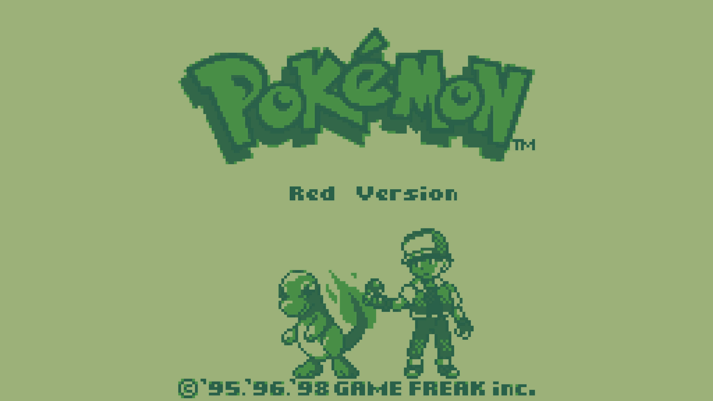
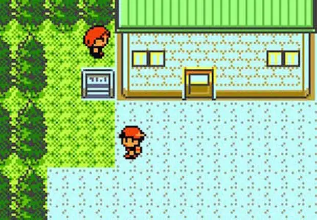

Pokémon Red and Green (1996 - Generation 1) - In Pokémon Red and Green, players take on the role of a
young trainer who sets out on a journey to become the Pokémon Champion. Along the way, they must collect
Pokémon, battle other trainers, and complete the Pokédex. The games are set in the Kanto region, which is based
on the Japanese region of Honshu.
Pokémon Red and Green were a critical and commercial success. They were praised for their innovative gameplay,
their addictive nature, and their colorful graphics. The games have sold over 40 million copies worldwide,
making them some of the best-selling video games of all time.


Gold and Silver (Generation 2): In 1999, Pokémon Gold and Silver were released, introducing the Johto
region, 100 new
Pokémon, and a real-time clock system.
Ruby and Sapphire: 2002 (Generation 3) brought the release of Pokémon Ruby and Sapphire, introducing the
Hoenn region, double battles, and abilities for Pokémon.

Diamond and Pearl (Generation 5): In 2006, Pokémon Diamond and Pearl debuted on the Nintendo DS,
unveiling the Sinnoh
region, online capabilities, and new evolutions for existing Pokémon.
Pokemon Black and White (2010 - Generation 5) were released on Nintendo DS, featuring new pokemon,
enhanced graphics, the ability to use the touchscreen and the ability to battle other trainers online.


X and Y: 2013 (Generation 6) saw the release of Pokémon X and Y, the first main-series Pokémon games on
the Nintendo 3DS. These games introduced the Kalos region, Mega Evolution, and a fully 3D world.
Sun and Moon (2016 - Generation 7): these introduced 153 new pokemon, the ability to use Z-Moves to
empower pokemon further tan normal, and Alola forms, exclusive to the region featured in the game.